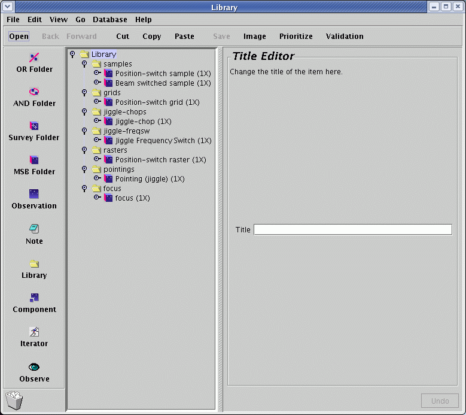
A window will pop up containing a list of folders. The little switch on the left of the folder icons is an open/close toggle switch. Push open the folder titled "Samples" and then select the MSB labeled "Beam-switch sample(1X) " and click "Copy" on the toolbar.
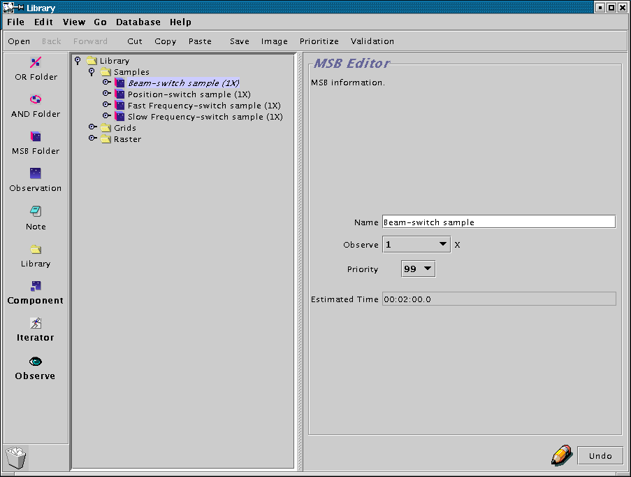
Now go back to your Science Program window, and click on "Paste". The MSB will be dropped into your science program. Congratulations! You're now well underway. Now is a good time to save your progress, so use the File->Save option in your Science Program window and carry on.
Click on the title of the MSB. This will activate the MSB editor panel on the right section of your window.
The properties of an MSB are very simple.
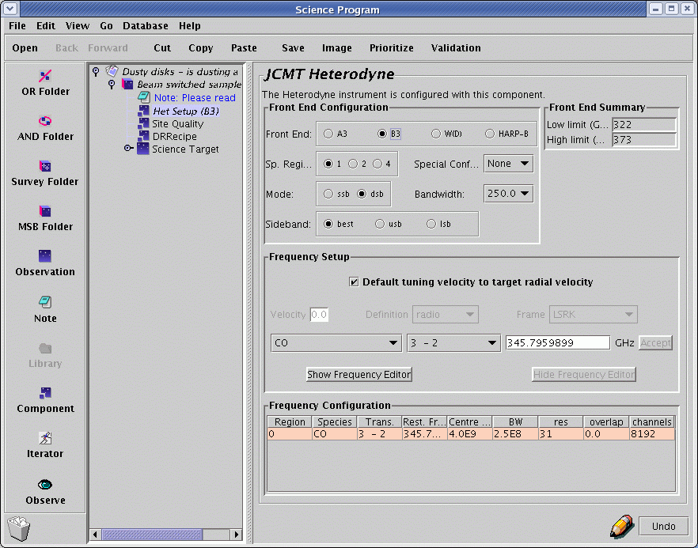
We'll now go through these individually.
If you click on the "Het Setup" component, the properties of that component are shown in the right hand side of the science program window, as shown below. The purpose of this component is to enable the set up of the required heterodyne instrument and the DAS prior to an observation.
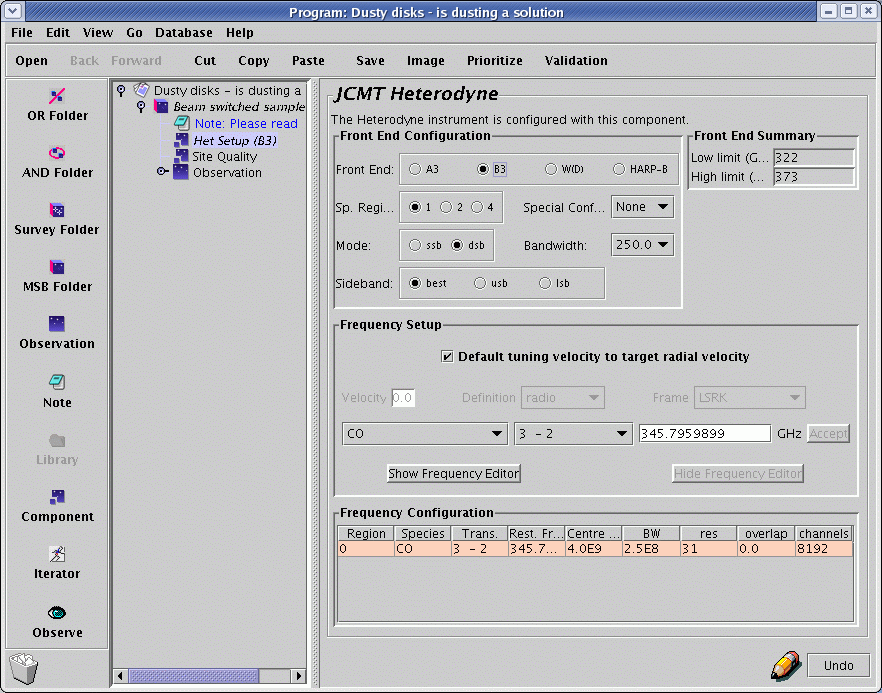
The first row of pull down menu's enables the user to setup the front end using a series of pull down menus.
In order to indicate receiver tuning, the user needs to indicate the rest frequency of the spectral line observation, the velocity of the object, the velocity definition (radio, optical or redshift), and the rest frame (LSR, Geocentric or Heliocentric). The rest frequency of the line can be set by choosing the required molecule and transition from the pull-down menus, or by entering the frequency manually, in MHz, in the frequency field. Note that if you enter a redshift, you are expected to enter the dimensionless redshift rather than cz.
Having entered the required line transition, velocity, velocity definition and frame, click the "Accept Values" button to finalise them. Note that manually entering frequency values in the rest frequency field causes the molecule and transition menus take on values of "No Line", even if the frequency does in fact correspond to a known transition. Lookup occurs from molecule/transition to frequency only - no lookup is done in the opposite direction.
For example, suppose we would like to look for a broad CO(3-2) extragalactic line using Rx B3 in an object with cz=12,000 km/s. We would choose Rx B3, ssb, dual mixer observing and a DAS backend of 0.92 GHz using the pull down menus. The line and transition would be selected by choosing "CO" and "3-2" from the pull down menu's and the velocity entered (12,000 km/s) in the velocity field (after setting up the appropriate velocity definition). The IF frequency for Rx B3 is 4 GHz, so the image sideband will be 8 GHz above or below the required observing frequency (332 GHz), depending on whether we choose to observe using the lower or upper sideband. There is an atmospheric water absorption feature at 325 GHz, so it makes sense to observe using the lower sideband by choosing "lsb" from the pull-down menu, so that the image sideband does not contribute unwanted noise by being near the 325 GHz absorption feature. The appearance of the completed het setup component is shown below. MAKE SURE you click the "Accept values" button when you are finished editing - it will grey itself out, indicating your values have been properly internalised.
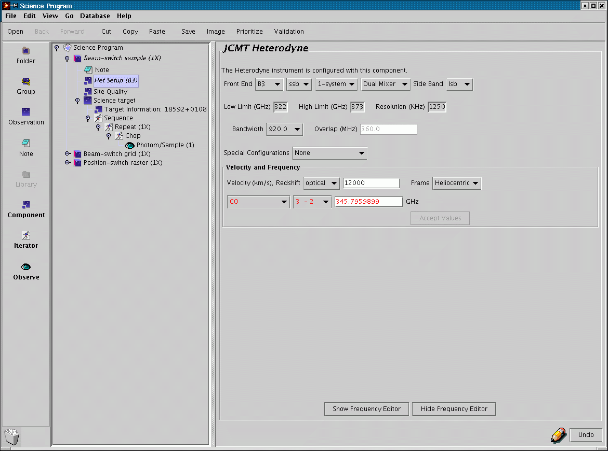The het-setup component also includes a "Frequency Editor" tool. This can be useful in setting choosing your observing frequencies and bandwidths, particularly where you might want to observe several lines at once with DSB receivers, or use non-standard DAS settings. We'll postpone looking at this for now.
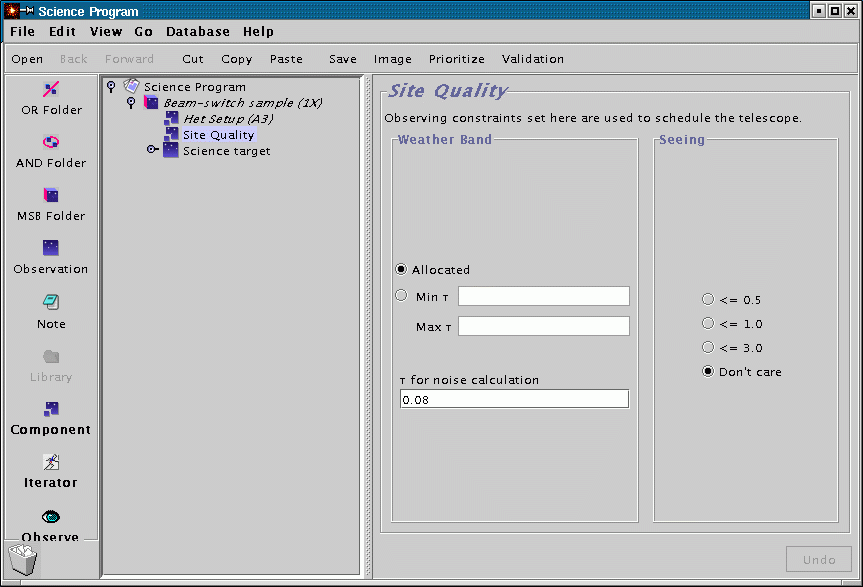
You probably don't need to change anything here, except if your program is using different receivers (where you don't want an RxW project done in grade 5 weather or an RxA project in grade 2 weather). The default value of tau of "Allocated" means that your MSB can be scheduled when the tau is in the range that was specified by your TAG for your project. The default value of the sub-millimetre seeing is "Don't Care".
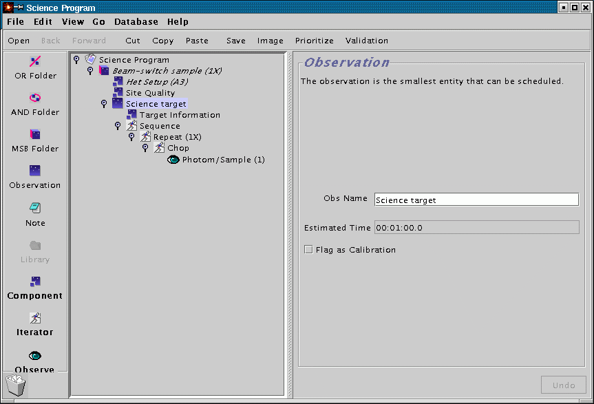
The first element inside the Science target is the "Target information" component. We will discuss this shortly. Next there is a sequence iterator which contains a repeat iterator, a chop iterator and a single "eye". The sequence iterator doesn't do anything per se, so you can ignore it for the moment, but it is important to note that it represents the sequence of events at the telescope. The repeat iterator allows the user to control the number of repeats carried out for a certain observation. The "eye" icon represents the observation itself. Before explaining the function of each of these elements, the nomenclature of the elements of a general MSB will be reviewed.
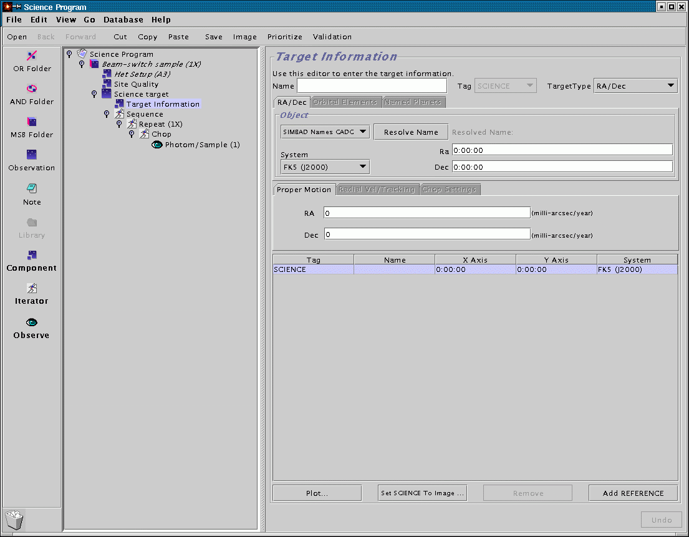
At first glance you might think that what you have to do here is enter your target name and position and you can certainly do that. However you can do even less than that - if you are using a machine with an Internet connection try just entering the name of your target (in our example the IRAS source 18592+0108) and hit "Resolve Name".
After a brief pause the RA and DEC co-ordinate fields are populated with the SIMBAD co-ordinates for the source. The SIMBAD name for the source will also be indicated next to the "Resolve Name" button. And of course, double check that the co-ordinates are those you intend to observe.
But wait - that's not all.

A whole new window will pop up - this is the position editor. Looks a bit boring at the moment though, with just a small green crosshair in the middle. Let's make it a bit more interesting - go to Catalog menu and into the Image Servers item and chose a Digital Sky Survey near near you:

It's now full of stars. The display application, by the way, is is based on JSky, for those familiar with it.
The DSS may not be the most useful survey for planning sub-millimetre observations, but you can read in any FITS image with an appropriate WCS header using Open under the File menu. You can also fetch a FITS image over the Web. In the screenshot below I have loaded the SCUBA commissioning scan map of W48 (image courtesy Tim Jenness). If you have an Internet connection, go to the File menu, select "Open URL...:" and type in the following URL: http://www.jach.hawaii.edu/JAC/software/jcmtot/w48.fits or download the image by clicking on the link and and use File->Open to read it in:

You will then see the DSS image replaced with the sub-millimetre image.
A short technical note if you are planning on generating your own image for import: if you want to import a SCUBA map in NDF format, convert it to FITS by using the Starlink convert utility with the following arguments:ndf2fits encoding=FITS-IRAF bitpix=32 comp=DIf you have difficulty despite doing this, let us know.
As I mentioned before, the green cross-hair is the position of your science co-ordinates. Click on the button on the left side of the position editor entitled "Sci Area". The circle that is drawn is the HPBW of the chosen heterodyne receiver.
Now for the useful thing I mentioned earlier. While leaving the position editor window open, go back to your science program window and click on your chop iterator that is inside your science observation. Now look at the position editor. The chop beams and the area in which they will rotate during integration are drawn. Well, that's no good - we're chopping onto bright stuff!

This is where the position editor comes into its own. We are going to use it to specify where exactly we would like to chop. In the chop iterator, use the drop down menu to change the chopping co-ordinate frame from AZEL to TRACKING (i.e. RA/DEC). You will notice that in the position editor the uncertainty circles have disappeared, since we will always chop in the same position in the sky:

Now back in the position editor, click on the Drag button on the upper left side of the window. The click on the centre of one of the chop beams in the display and drag it away from the emission:

You will note that the values in the chop iterator have automatically changed to reflect the new chop throw and angle values. Neat, eh? Remember that by default, any calibrations for you observations will be preformed with the same chop as the science observation.
You can also click on the target component and use Drag to change your science co-ordinates if you wish.

The chop iterator has a list of chop configurations (in this example only one 60 arcsecond chop, but their could be more for SCUBA observations). Each chop needs to be specified by a throw, an angle, and co-ordinate frame of the angle. In this example the frame is AZEL (Azimuth Elevation) but other common options are TRACKING (RA & Dec) or FPLANE (Focal Plane, i.e. Nasmyth for SCUBA). A 60 arcsecond chop with an angle of 90 degrees AZEL (i.e. 60 arcsec in the azimuth direction) is typical for beamswitched observations of compact sources. If the source is extended, one might want to increase the chop throw, or if the source was elongated in one direction on the sky, chop relative to the RA/DEC frame.
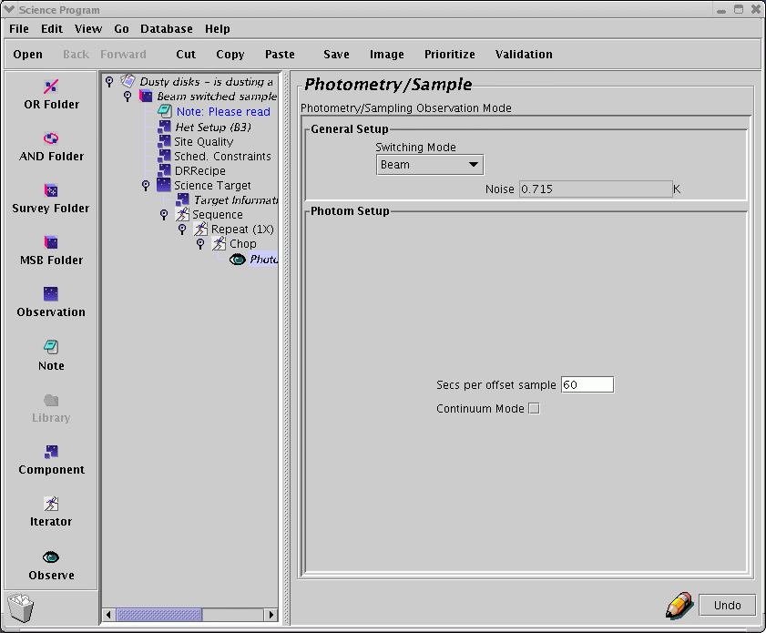
For most purposes, the "continuous cal" check box should be left ticked. Continuous calibration, where hot load/cold load calibrations are done continuously as the observation is made, rather than just at the beginning and end, are desirable except for Receiver W in medium/bad weather conditions or for certain specialised observing modes (e.g. chopping onto opposite planetary limbs of rotating planets). In general, its best to leave the box checked and rely on the TSS to make the correct decision at the time of observation.
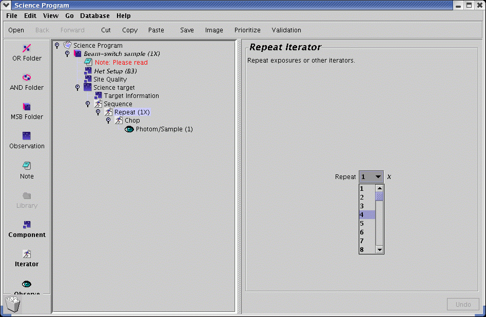
The repeat iterator acts on things that are inside the repeat iterator (i.e. indented under it) in turn. So if you set it to 2, your science observation consist of two spectral line samples i.e you will end up with precisely two GSD files. If you require a long integration of a source, it makes sense to break the observation down into shorter integrations of around ten minutes or so, so that data quality can be assessed as the observation progresses. In practice, you set up the integration time required per GSD file using the photom/sample eye and then use the repeat iterator to define a sufficient number of repeats to give the total required integration time.
Now you can see how your time usage builds up. Working our way inside out (and bottom to top):

If you select the outer MSB icon, and then click on the note icon on the left hand bar of the window, a note appears in the MSB as shown above. Ideally we want this note to be the first item in the MSB, so you move it by dragging it with the mouse and dropping it just below the outer MSB icon. The repositioned note should now appear as below.

If you click on the note icon, the right hand panel allows you to enter the name of the note and the main text body of the note. There is also a "Show to observer" checkbox which should be checked if you want the note to be visible for the observer/TSS at the time of observation. All of the information about the observation not covered by other elements of the MSB should be included in "show to observer" notes. This would be much of the material which would have previously gone into the "Overall Strategy" and "Observing Cookbook" sections of heterodyne observing templates. It is important to note that calibration details are explicity included in heterodyne MSBs as they are for SCUBA MSBs, so the heterodyne observer should spell out the required calibration observations in a "show to observer" note.
For the Fast and slow frequency switching MSBs, one does not specify a chop or offset position, rather one specifies a frequency throw and switching rate within the modified "Photom/Sample" eye. Fast frequency switching allows the user to specify both frequency throw and rate, whereas for slow frequency switching the rate is set to the reciprocal of the cycle time.
Suppose the user requires three pointings along the long axis of a galaxy, at a half beam width spacing of 10 arcseconds. Let us assume the long axis of the galaxy has a position angle of 30 degrees on the sky. First enter the position angle in the "P.A." field. The rotated frame has axes labeled p and q, so in order to obtain the required pointings along our galaxy we require (p,q) offsets of (0,-10), (0,0) and (0,10). One adds a new pointing by clicking on the "new" button. One then modifies the offsets via the p and q boxes directly above the "new" button. The highlighted pointing can be removed using the "remove" button. The "Rm. all" button removes all of the user-added pointings. The arrow buttons to the right of the box displaying the pointings allow the pointings to be re-ordered. The highlight pointing can be advanced one position up or down the pointing list, or to the top or bottom of the list by clicking on these arrow buttons. For our example, the completed offset iterator will appear as show below.
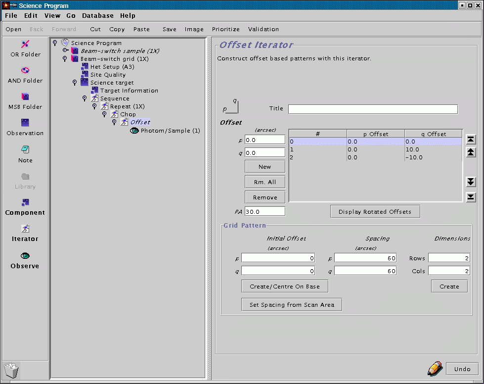
If you want to see what the rotated offsets are in the sky frame (which will be the co-ordinate frame specified in the "target information" element), click and hold the "Display Rotated Offsets" button.
The offset iterator has the ability to automatically generate regularly spaced grids without the need to enter each pointing individually. The "Grid Pattern" section of the "Offset iterator" allows the user to specify the offset of the map centre (relative to the co-ordinate in the Target information box), the grid point spacing and the dimensions of the grid, in grid points. To create a 3x3 grid, with a ten arcsecond spacing, one would fill in the fields of the grid pattern section as ilustrated below, and then click on either "Create" or "Create/Centre on Base" button. The pointings generated then appear in the pointing list box above. Notice that "Create" created a grid where the (0,0) point is at the top left hand corner of the map, whereas "Create/Centre on Base" chooses the point the geometrical centre of the grid for the (0,0) position. This will only correspond to a pointing position for grids with odd p and q dimensions. The screenshot below show the result of clicking on the "Create/Centre on Base position" - nine points with the (0,0) position corresponding to the map centre.
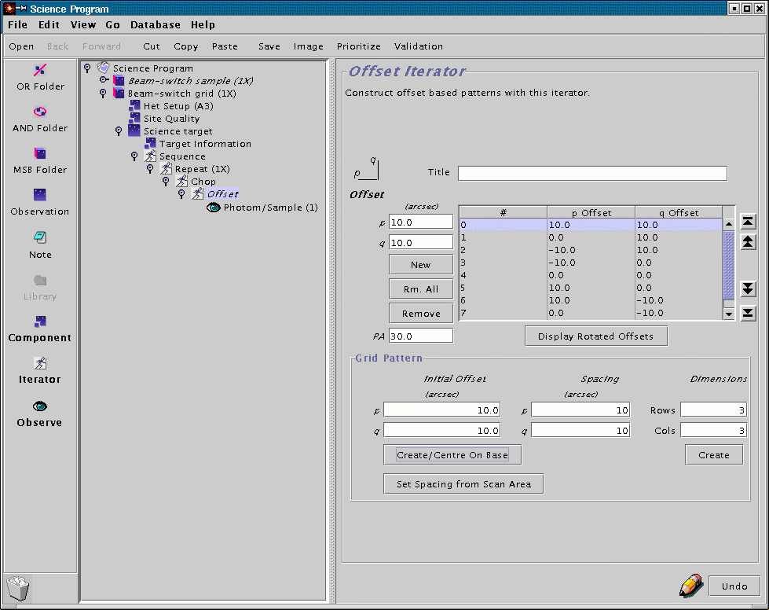
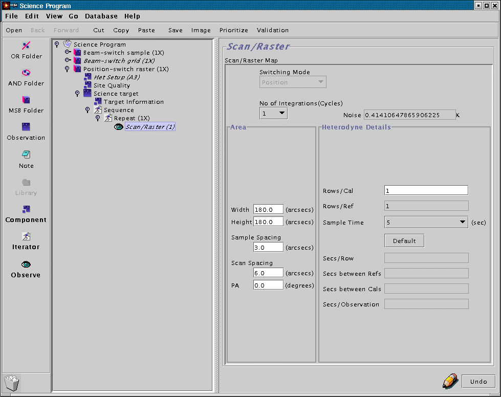
The sample time pull-down menu allows the user to set the amount of time data is taken for for each map "point" as the receiver is scanned across the sky. The pull down menu labelled "No. of integrations" sets the number of complete raster map patterns carried out. The RMS noise of the final co-added map is also indicated. Note, one can either set the required number of map repeats here or leave this pull down menu at one and set the number of maps using the repeat iterator- the end result will be same. The rows per cal option allows the user to indicate how many raster rows should be completed before a hot/cold calibration is made. Depending on the receiver, observation and sky conditions, a hot/cold calibration should be performed regularly, say, once every 30, 60 or 90 minutes.
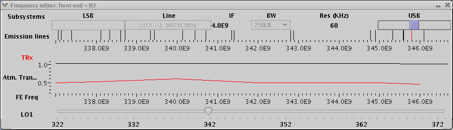
Starting at the top of the window we see a rectangle labelled LSB on the left and a rectangle labelled USB on the right. In between these two rectangle we have indication of the receiver IF frequency, the currently selected bandwidth and the resolution. Below these items there is a frequency scale and vertical lines indicating the position of astronomical spectral lines. Below this frequency scale is a plot indicating the atmospheric transmission as a function of frequency. Below this is a frequency scale labelled "FE frequency" and below this is a scale and slider labelled "LO1".
The chief idea of the frequency editor is to give a visual representation of the observing band selected for the receiver, together with an indication of the spectral lines visible in that band. To begin with, use the het-setup component to select RxB3, the CO(3-2) transition, and ssb operation observing with the lower sideband (lsb). Enter a velocity of 0 km/s. The frequency editor will now show USB rectangle greyed out, and the LSB rectangle highlighted. Try changing the bandwidth using the "BW" pull-down menu. Notice that the textured lilac rectangle in the middle of the LSB rectangle changes size, indicating the extent of the band on the frequency scale directly below. Notice also that a spectral line is highlighted in red at the centre of the band. This is the CO(3-2) line you selected before opening the frequency editor tool. Now select a bandwidth of 920 MHz. The band, indicated by the textured lilac rectangle, can be seen to encompass several other spectral lines. If you click and hold the right mouse button near the spectral lines, a menu will appear. Moving down the menu, still keeping the right mouse button held down, highlights the name of a spectral line on the menu and causes the corresponding spectral line to be highlighted in green on the frequency scale. This enables the identification of the spectral lines which may be visible in your chosen receiver passband.
The frequency scale at the bottom of the window, labelled "FE freq", corresponds to the observing frequency in the rest frame of the receiver. This is just the LO frequency plus/minus the IF frequency for the upper and lower sideband, respectively. The frequency scale immediately below the spectral lines is the "FE freq" doppler shifted by the velocity value and definition entered in the het-setup component. You will notice this scale will shift if you enter a non-zero velocity, and will also shift if you cahnge the velocity definition, e.g. from radio to optical. Note the frequency of the upper scale, lower scale and LO are only approximate because the correction from the receiver rest frame to the chosen rest frame cannot be made, since the time when the observation will be made is unknown. In fact, if you really enjoy working backwards, you can move the LO slider by dragging it while pressing the left and right mouse buttons simultaneously. As you might expect, this changes both frequency scales and the line rest frequency. Moving the LO slider can be a convenient means of choosing a band centre frequency such that particular spectral lines are included or excluded from your passband. Remember, for making the observation, the important parameters are the rest frequency, velocity, rest frame and velocity definition. These will be used to calculate the actual LO tuning at the time of observation, which will depend on the relative velocities of the receiver and the chosen rest frame at that time.
The frequency editor tool is particular useful when it comes to receivers operating in double sideband mode, where two differing sky frequencies end up with the same IF frequency. In this case, identifying spectral lines can be tricky since one does not know, a priori, which sideband they are from. Choose RxA, which has no sideband suppression capabilities, from the pull-down menu on the het-setup component. Notice that neither LSB nor USB rectangles are greyed out, indicating that lines from both sidebands may be visible in the IF passband. The apparent position of lines from the image sideband are a function both of the rest frequency and source velocity of the line chosen to be at the centre of the signal sideband. The frequency editor gives a useful graphical reperesentation of this effect, allowing one to either choose observing frequencies to avoid contamination, or identify unknown lines in the passband. The fact that the sky transmission and receiver noise are shown in the frequency editor tool allows the user to reliably choose between upper and lower sidebands when observing in SSB mode.
The frequency editor tool is also useful when using non-standard DAS configurations. As an example, choose NS_COHCN_125AB from the non-standard configuration menu. This mode is designed to allow the user to observe the CO(3-2) and HCN(4-3) lines simulataneously using the highest resolution 125 MHZ DAS mode. This is achieved by adjusting both the frontend LO frequency (to move the lines closer together) and the DAS LO frequency (to centre the subsystem on the two lines). In the frequency editor this is represented by a shifting of the bands covered within the LSB and USB sliders. You can use the spectral line identification menu to confirm that CO(3-2) appears in the lower sideband and upper sideband. Some DAS modes, e.g. NS_H2CO_125X4, use the different sub-bands of the DAS independently to provide a coverage useful for measuring two closely spaced lines accurately. If you choose one of these modes from the pull down menu, you will see that the coverage of the DAS subbands is represented by multiple LSB and USB sliders. If you select NS_H2CO_125X4, you should be able to confirm, using the line identification menu, that this configuration enables the simultanaeous observation of the H2CO lines at 218.22 GHz and 218.48 GHz with the highest DAS frequency resolution. Please consult this list of non-standard modes DAS modes, and the DAS USER guide for further information when planning your observation.